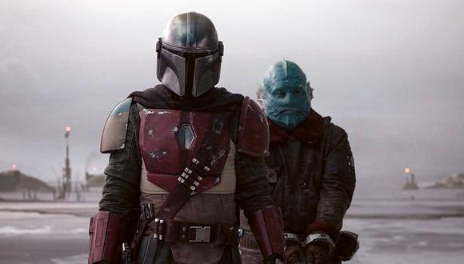

Temporada 1

Episodio 1
Cinco años después de la caída del Imperio, Greef Karga recibe su última
recompensa por parte de un cazatesoros mandaloriano. Al terminar, este
acepta un encargo algo enigmático. Es un objetivo del cual no se tiene más
información que su edad. El mandaloriano recibe un pago inicial que lleva a
un enclave encubierto donde un armero lo usa para convertirlo en un pauldrón
Kuill, cansado de todo el ajetreo que traen los cazarecompensas, decide
llevarle hasta el objetivo. A regañadientes, el mandaloriano se reúne con el
droide cazarrecompensas IG-11 y encontrar a un hijo de la especie de Yoda.
Cuando IG-11 intenta matar al pequeño, el mandaloriano le dispara
destruyéndolo y llevándose consigo al niño vivo.
Episodio 2
Al regresar con el niño, el mandaloriano se ve envuelto en una lucha
donde matará a un grupo de cazarrecompensas rivales que le tienden una
emboscada. Cuando se libra de ellos y se está acercando a su barco, se
encuentra que los Jawas lo están despojando de sus partes, y se tiene que
enfrentar violentamente a ellos. Días después, le pide ayuda a Kuiil, para
que, le diga donde encontrarles y así negociar para que le devuelvan las
partes que se han llevado de su barco. Así, el mandaloriano se embarca en
otra misión: recuperar el huevo de un rinoceronte como Mudhorn, a cambio de
recuperar estas piezas. Cuando entra en la cueva de este, se encuentra con
una gran bestia que le ataca dañando su armadura, pero para su gran sopresa,
Baby Yoda, hace uso de su poder y hace que la bestia levite permitiendo así
que el mandaloriano le mate. Cuando completa el intercambio, Kuiil y este
trabajan juntos para reparar la nave que le permitirá abandonar el planeta
con el pequeño.
Episodio 3
El mandaloriano entre al niño en Nevarro y recibe a cambio 20 barras de
acero de Beskar. Este, le pregunta sobre los planes que tiene para el
pequeño, aunque no consigue enterarse. El mandaloriano manda sustitur su
armadura dañada y mejorar su armas y forja una coraza con el acero de Beskar.
Después de esto, el mandaloriano acepta otro encargo de Greef Karga y prepara
su nave para partir. Pero se siente culpable por abandonar el niño, y va en
su rescate. Después de atacar la base, se hace con el niño en el laboratorio
del Dr. Pershing donde estaban experimentando con él. Cuando este regresa a
su nave con el pequeño, se ve envuelto en una emboscada donde otros
cazarrecompensas y el propio Greef Karga le piden que devuelva el niño, y
ante la negativa del mandaloriano, estalla un tiroteo. Este, con ayuda de
otros mandalorianos, consigue escapar con el niño.
Episodio 4
Amos llegan a Sorgan y se encuentra con la ex-soldado Cara Dune. Esta le
explica que se esconde allí y le pide que se vaya. Mientras arregla su nave
para irse, dos pescadores se le acercan, ofreciéndole un contraro para
ahuyentar a una banda de invasores klatoonianos. Este acepta a vambio de
alojamientos, y consigue, también, la ayuda de Dune.En Sorgan, son alojados
por Omera, una madre viuda. Este descubre que los invasores tienen un AT-ST
Imperial y les instan a irse, pero los aldeanos se niegan y entonces Dune y
el mandaloriano les entrenan para defenderse. Estos les provocan por la
noche y, haciendo explotar al AT-ST, obliga al resto de invasores a huir.
Con la paz restaurada, el mandaloriano se da cuenta que la aldea no es un
lugar seguro, por lo que él y el niño, se marchan de alli.
Episodio 5
El mandaloriano, que tiene que reparar su nave, busca trabajo en una
cantina para pagar estas reparaciones y conoce a Toro Calican, un aspirante
a cazarrecompensas que persigue a Fennec Shand, un mercenario de élite.
Calican necesita atraparle para unirse al gremio, y el mandaloriano le ayuda.
Ambos lo capturan en el desierto, y mientras que el mandaloriano busca una
manera de transporte, tras ser destruida una de las motos rapidas, Shand le
cuenta a Calican, que el mandaloriano traicionó al gremio. Shan se ofrece
para ayudar a Calican a capturarle si lo libera, pero en su lugar le dispara.
Episodio 6
El mandaloriano contacta con 'Ran' Malk, un antiguo compañero para trabajar.
Este acepta y le da la bienvenida a su estación espacialy le informa que se
necesita su nave para un trabajo de cinco hombres. Al mandaloriano se le une
un ex tirador imperial Mayfeld, el hombre fuerte devoniano Burg, el piloto
droide Q9-0, y el experto en cuchillos Twi'lek Xi'an para una misión de
rescate del hermano de Xi'an, Qin, prisionero de la Nueva República. Despues
de infiltrarse en la nave donde le tienen prisionero, luchan a traves de los
droides de seguridad para conseguir llegar a la sala de control para poder
rescatar a Qin. Pero este, traiciona a los mandalorianos y se escapa, aunque
no por mucho tiempo, porque, al final, el mandaloriano le entrega a Ran y
este se marcha con su pago.
Episodio 7
El mandaloriano recibe un mensaje de Greef Karga donde se entera de que
Nevarro ha sido invadidada por ex-tropas imperailes y le propone utilizar al niño
como cebo para matarles y liberar la ciudad, a cambio, Karga le ofrece arreglar
las cosas con el gremio y así el niño y él podrán vivir en paz.Este siente que es
un trampa y le pide ayuda a Kuiil y a Dune para que le ayuden. Estos se
encuentran con Karga y sus socios, que son atacados por los Mynocks y el niño usa
la fuerza para sanar la herida que sufre Karga. Este a cambio, mata a todos sus
socios y confiesa cual era el plan original.En el desierto, dos tropas de
exploradores interceptan las comunicaciones del mandaloriano y rastrean a Kuiil,
matándolo y llevándose al niño.
Episodio 8
IG-11 creado por Kuiil rescata al niño y Gideon les adiverte de su muerte a no
ser que le ofrezcan su ayuda. Pero entonces, Gideon hiere al mandaloriano y el
niño usa de nuevo sus fuerzas para ayudar a este.El mandaloriano les envía a
través de una rejilla de alcantarilla para que se pongan a salvo tanto ellos como
el niño, y este encuentra un grupo de mandalorianos encubieros muertos, excepto
el Armero. El mandaloriano le encarga cuidar del niño como si fuera suyo, que
descubra de donde procede y le devuelva a su clase. El grupo es emboscado por las
tropas de asalto, e IG-11 se autodestruye para salvarles y así eliminar al enemigo.
Gideon atacan y el mandaloriano usa el jetpack que previamente le ha dado el Armero
para derribar la nave. Este consigue escapar y reunirse con el niño.